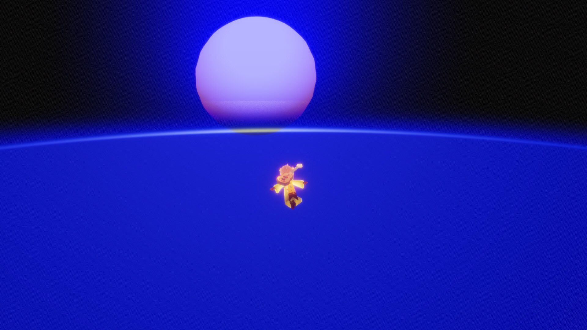
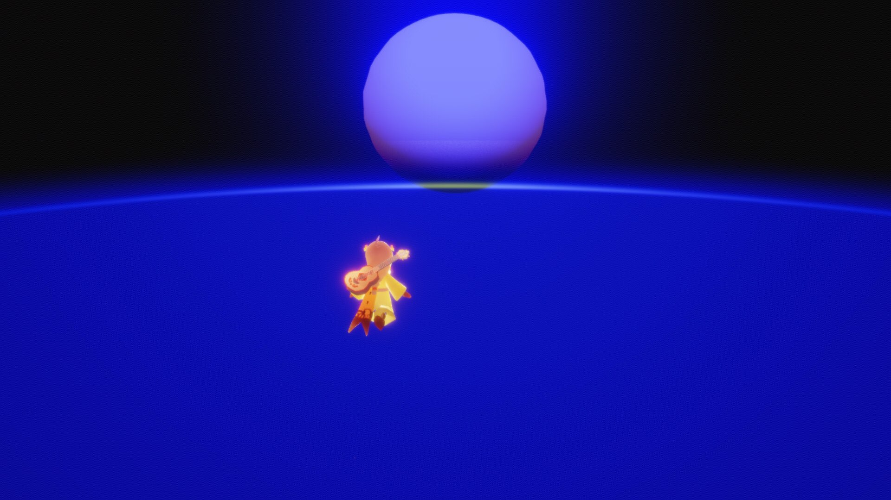
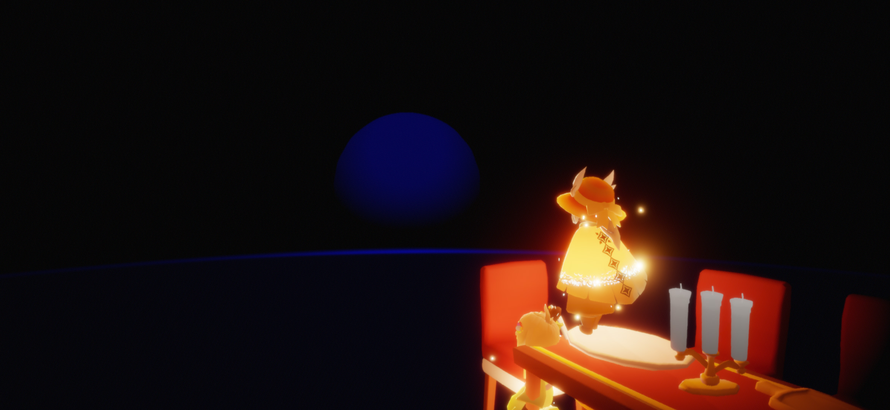

回到上一级
live service
  F&Q：
F:我如何去这个地方 | How do I get to this place. 视频链接(中文) Video link (Chinese)
Q:在办公室为夜晚时，去太空站（如果想直接去，请和好友互相背负（rocket），到达一定高度后，靠近太阳，飞入风墙，一直切换飞行模式，往有“小白点”的地方飞，到达与太空站差不多的高度）
到达太空站后，放出椅子，在椅子边缘使用留影蜡烛，用倒地动作使人物倒在椅子外点击留影，开始后回到Home，在白屏的瞬间结束录制。
前往表演季的向导旁边再次使用留影蜡烛。
注意：请邀请好友传送到这个地方，如果周围环境变黑了，你可以回到遇境，然后再传送到好友那边。
（此翻译为机器翻译)
After arriving at the space station, release the chair, use the photo candle at the edge of the chair, use the falling action to make the character fall out of the chair, click the photo, return to home after starting, and end the recording in the moment of white screen.
Go to the guide of season of performance and use the photo candle again.
Note: Please invite your friends to send it to this place. If the surrounding environment turns dark, you can return to the encounter and then send it to your friends.
(this translation is machine translation)